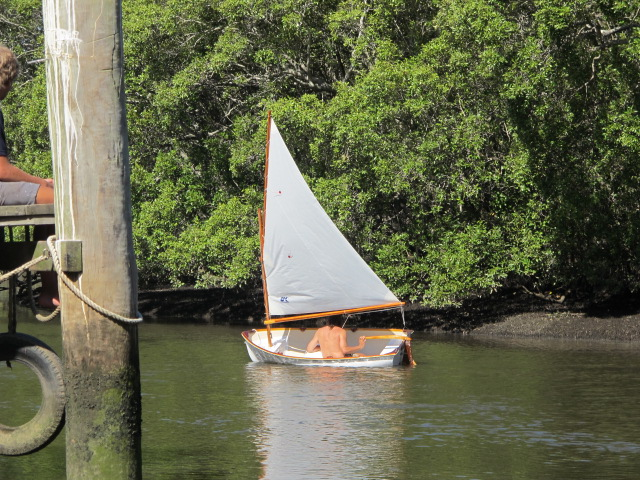

Deagon Dinghy
Based off the model of the original sailing tender for the classic yacht Laurabada, the Deagon Dinghy is a composite construction rowing/sailing gaff rigged dinghy suited for boats of all sizes. These are perfect as a yacht tender or as a pleasure sailer.
Constructed using carbon fiber, these tenders are lightweight (16kg) but strong enough to endure the elements.
The gaff rig, is perfect for a large variety of weather conditions and the unstayed rig allows easy assembly and storage.
The dinghies are created on the classic lines of the original tender and still have the charm of the original.
If you are interested in owning a Deagon Dinghy, call or email us for a quote.